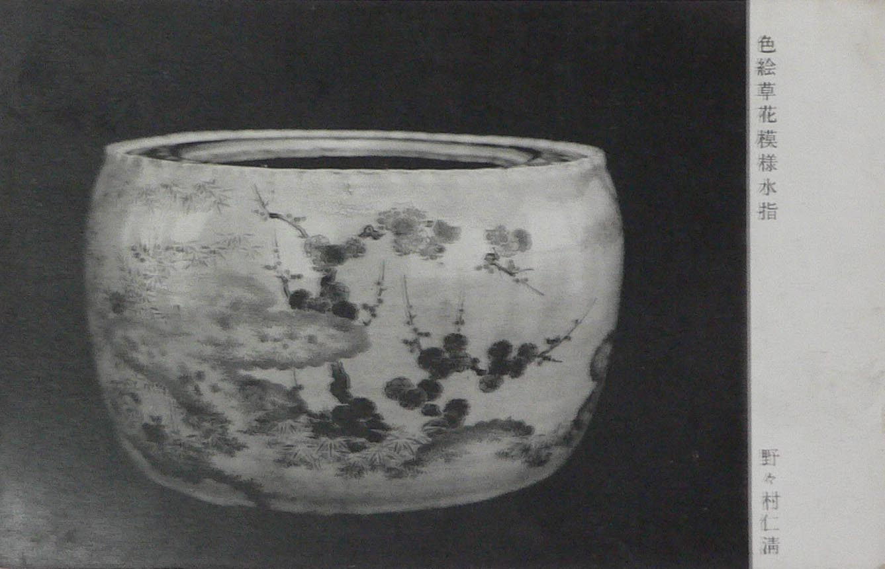
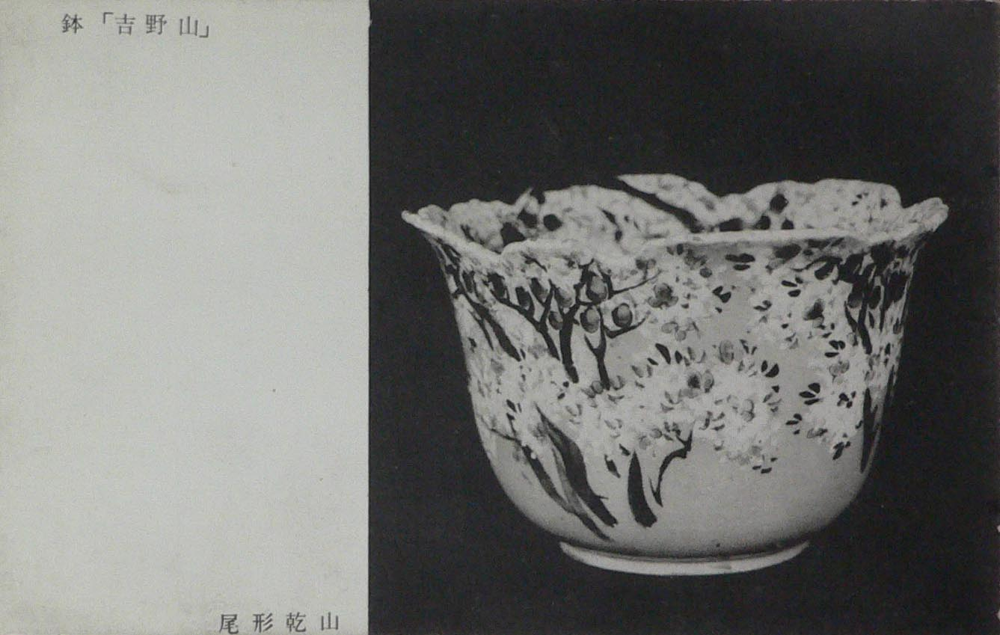
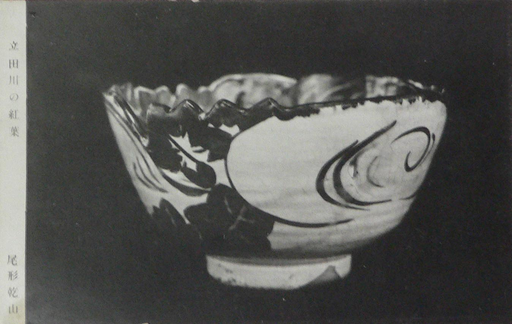
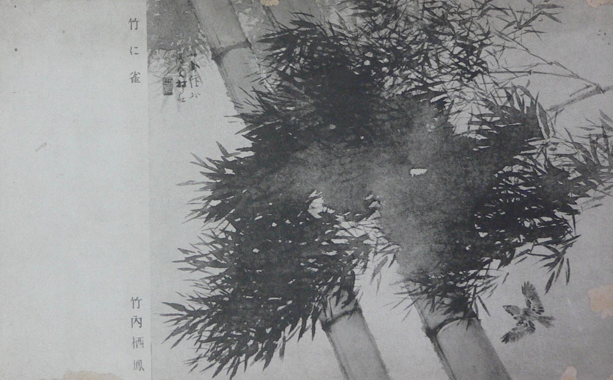
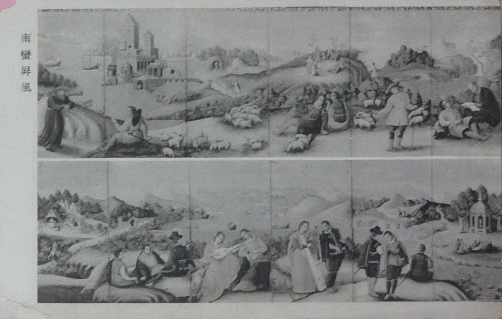
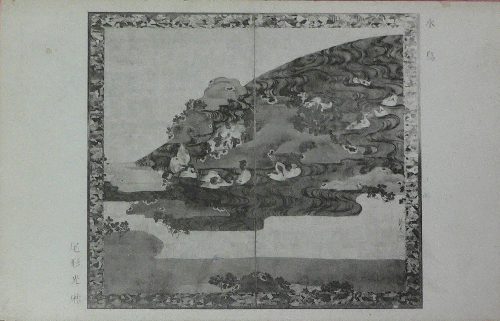
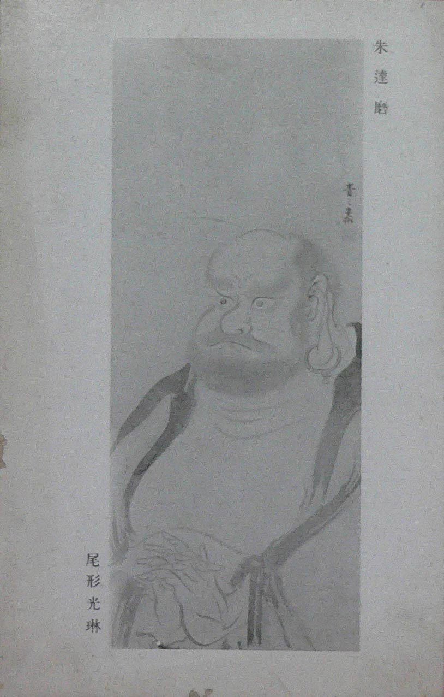
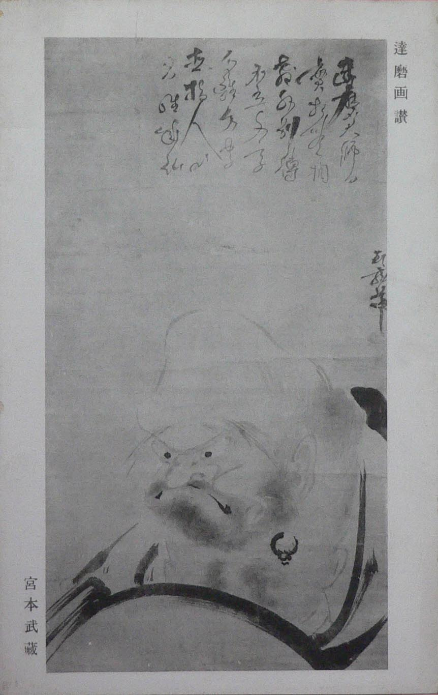
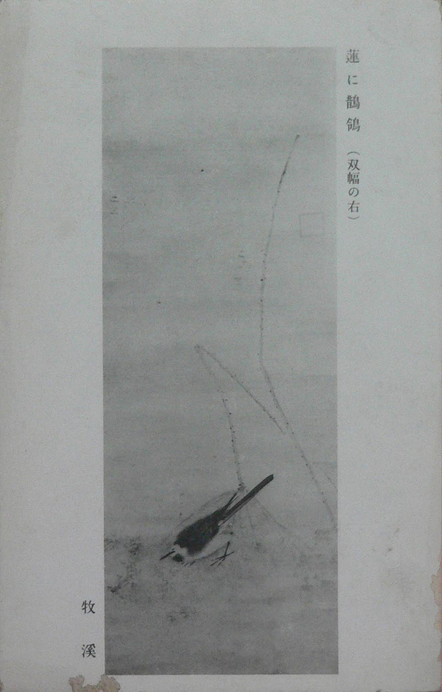

――― 岡
田 自 観 師 の 論 文 集 ――発行誌別
箱根美術館絵葉書
| 箱根美術館絵葉書 推定 ２７年 モノクロ 九葉 （正確な枚数は不明） 東京・大塚巧芸社調製 |
|||
 |
 |
| 野々村仁清 色絵草花模様水指 | 尾形乾山 鉢「吉野山」 |
 |
 |
| 尾形乾山 立田川の紅葉 | 竹内栖鳳 竹に雀 |
 |
 |
| 南岸屏風 | 尾形光琳 水鳥 |
 |
 |
 |
| 尾形光琳 朱達磨 | 宮本武蔵 達磨画讃 | 牧渓 蓮に鶺鴒 |